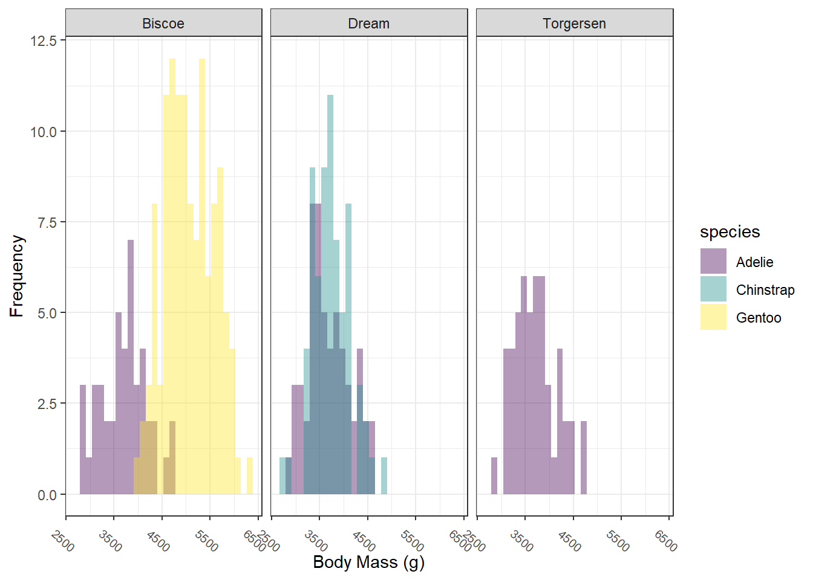
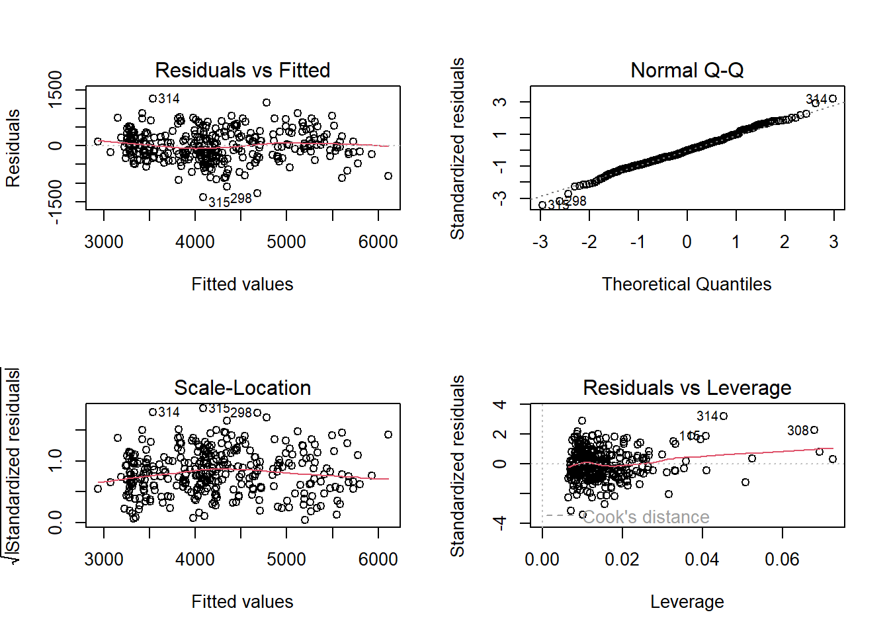

Review of linear models, probability distributions
Assigned Reading:
- Guthery, Fred S., and Ralph L. Bingham. “A primer on interpreting regression models.” The Journal of Wildlife Management 71.3 (2007): 684-692.
- Chapter 3 of Hobbs, N. T., & Hooten, M. B. (2015). Bayesian models: a statistical primer for ecologists. Princeton University Press.
Overview
We will be reviewing linear models (linear regression) using the Palmer Penguins dataset and R Package. We will start with generating hypotheses, then move on to data exploration, fitting our first model, checking that our model fits linear regression assumptions, and finally interpreting our model. Meet the penguin species that we’ll be working with:

Let’s get started!
Linear modeling example
Data exploration
# List of packages necessary to run this script:
require(librarian, quietly = TRUE)
shelf(tidyverse, cowplot, palmerpenguins, performance, quiet = TRUE)
# # Here is the link to the R Package with the penguins data:
# https://allisonhorst.github.io/palmerpenguins/
# Read in a data file
data(package = 'palmerpenguins')Take a look at the data. The head() function is good for this. On your own, try the str() function on the entire data.frame, the range() function on individual numeric columns, and the unique() function on character columns.
Note: there are two datasets included in the “palmerpenguins” package. We will use the cleaned ‘penguins’ dataset.
## # A tibble: 6 × 8
## species island bill_length_mm bill_depth_mm flipper_length_mm body_mass_g
## <fct> <fct> <dbl> <dbl> <int> <int>
## 1 Adelie Torgersen 39.1 18.7 181 3750
## 2 Adelie Torgersen 39.5 17.4 186 3800
## 3 Adelie Torgersen 40.3 18 195 3250
## 4 Adelie Torgersen NA NA NA NA
## 5 Adelie Torgersen 36.7 19.3 193 3450
## 6 Adelie Torgersen 39.3 20.6 190 3650
## # ℹ 2 more variables: sex <fct>, year <int>Try out some data exploration techniques that we’ve learned. Here, I’ve plotted histograms of body mass by species by island. On your own, create pairwise scatterplots, look for outliers, and whatever else you want to try.
ggplot(penguins,
aes(x = body_mass_g, fill = species)) +
geom_histogram(alpha = 0.4, position = "identity") +
scale_fill_viridis_d() + # there are great pre-made color palettes in ggplot2. The viridis palette is color blind-friendly.
facet_wrap(~ island) +
theme_bw() +
theme(axis.text.x = element_text(size = 7, angle = 320)) +
xlab("Body Mass (g)") +
ylab("Frequency")
Let’s try a model!
A pretty reasonable hypothesis to test is “In penguins, males will have greater body mass than females, and body mass is also allometrically related to bill length and depth.” We could also add that “body mass will vary across species.”
To test this hypothesis, let’s create a ‘global’ model containing all the variables that our hypotheses predict will influence body mass:
# fit the global linear regression
fit_global <-
lm(body_mass_g ~ sex + bill_length_mm * bill_depth_mm + species,
data = penguins)
# Check out the global model's coefficients, R^2 values, and p-values.
summary(fit_global)##
## Call:
## lm(formula = body_mass_g ~ sex + bill_length_mm * bill_depth_mm +
## species, data = penguins)
##
## Residuals:
## Min 1Q Median 3Q Max
## -787.41 -179.56 -6.98 199.41 904.99
##
## Coefficients:
## Estimate Std. Error t value Pr(>|t|)
## (Intercept) -3184.722 1833.850 -1.737 0.08340 .
## sexmale 440.126 48.824 9.014 < 2e-16 ***
## bill_length_mm 121.948 42.986 2.837 0.00484 **
## bill_depth_mm 315.022 102.849 3.063 0.00237 **
## speciesChinstrap -201.897 86.241 -2.341 0.01983 *
## speciesGentoo 1379.565 110.804 12.451 < 2e-16 ***
## bill_length_mm:bill_depth_mm -5.386 2.392 -2.251 0.02503 *
## ---
## Signif. codes: 0 '***' 0.001 '**' 0.01 '*' 0.05 '.' 0.1 ' ' 1
##
## Residual standard error: 298 on 326 degrees of freedom
## (11 observations deleted due to missingness)
## Multiple R-squared: 0.8655, Adjusted R-squared: 0.8631
## F-statistic: 349.7 on 6 and 326 DF, p-value: < 2.2e-16We did it! On your own, please go line-by-line through the summary table and–in words–communicate to yourself and/or your neighbors if each hypothesis is supported and why.
Additionally, you may be asking a common question for folks using categorical variables in regression. In this case, it’s probably “why are there no coefficient estimates for sex:female or species:Adelie?” On your own, search Google and/or StackOverflow for an answer.
Collinearity?
But wait–we forgot a critical step: checking for collinearity in the predictor variables! Now that we have a fitted model, we can use VIFs to assess collinearity:
## # Check for Multicollinearity
##
## Low Correlation
##
## Term VIF VIF 95% CI Increased SE Tolerance Tolerance 95% CI
## sex 2.23 [ 1.92, 2.66] 1.49 0.45 [0.38, 0.52]
##
## High Correlation
##
## Term VIF VIF 95% CI Increased SE Tolerance
## bill_length_mm 206.62 [167.80, 254.47] 14.37 4.84e-03
## bill_depth_mm 153.38 [124.59, 188.87] 12.38 6.52e-03
## species 28.03 [ 22.85, 34.43] 5.29 0.04
## bill_length_mm:bill_depth_mm 287.47 [233.43, 354.09] 16.96 3.48e-03
## Tolerance 95% CI
## [0.00, 0.01]
## [0.01, 0.01]
## [0.03, 0.04]
## [0.00, 0.00]Uh oh. Looks like we have >>> 10 VIFs for all predictor variables except sex! Are our species and allometric hypotheses scuppered?!
Before we get too morose, let’s try a few things to double-check these VIFs are giving us accurate information. First, it stands to reason that if we have interaction terms such as ‘x’, ‘y’ and ‘xy,’ then ‘x’ and ‘y’ will be correlated with their product ‘xy,’ right? One way to demonstrate this is by standardizing (i.e., centering or scaling) the offending numeric predictor variables and recalculating VIFs. This should reduce the collinearity at least for the interaction terms. Let’s try it:
# Create a new data.frame with
penguins <-
penguins %>%
mutate(across(c(bill_length_mm, bill_depth_mm),
.fns = function(X) as.numeric(scale(X)),
.names = "{.col}_scaled"))
# fit the global linear regression
fit_global_scaled <-
lm(body_mass_g ~ sex + bill_length_mm_scaled * bill_depth_mm_scaled + species,
data = penguins)
# Use performance::check_collinearity to calculate VIFs:
check_collinearity(fit_global_scaled)## # Check for Multicollinearity
##
## Low Correlation
##
## Term VIF VIF 95% CI Increased SE
## sex 2.23 [ 1.92, 2.66] 1.49
## bill_length_mm_scaled:bill_depth_mm_scaled 1.75 [ 1.53, 2.07] 1.32
## Tolerance Tolerance 95% CI
## 0.45 [0.38, 0.52]
## 0.57 [0.48, 0.65]
##
## Moderate Correlation
##
## Term VIF VIF 95% CI Increased SE Tolerance
## bill_length_mm_scaled 6.00 [ 4.97, 7.29] 2.45 0.17
## bill_depth_mm_scaled 6.11 [ 5.07, 7.43] 2.47 0.16
## Tolerance 95% CI
## [0.14, 0.20]
## [0.13, 0.20]
##
## High Correlation
##
## Term VIF VIF 95% CI Increased SE Tolerance Tolerance 95% CI
## species 28.03 [22.85, 34.43] 5.29 0.04 [0.03, 0.04]Okay, so far so good. The second thing to check is whether coefficient, p-values, and \(R^2\) values have changed between the un-standardized global model and the standardized global model. Run this block on your own and see what happens:
# Compare coefficients and p-values.
summary(fit_global)$coefficients # Note: summary() creates a list that you can index for specific model information.
summary(fit_global_scaled)$coefficients
# Compare R^2 values
summary(fit_global)$adj.r.squared
summary(fit_global_scaled)$adj.r.squaredGreat! Both our expectations for the interaction terms were confirmed, and we don’t need to worry about high VIFs there.
However, we still need to deal with the > 10 VIF for species, which does appear to be accurate. Fortunately, the answer is simple: drop the species variable from the model and recheck for collinearity. On your own, consider model outputs from the code chunk below and compare these to previous model outputs:
# fit the global linear regression
fit_global_scaled_noSpecies <-
lm(body_mass_g ~ sex + bill_length_mm_scaled * bill_depth_mm_scaled,
data = penguins)
# Check collinearity
check_collinearity(fit_global_scaled_noSpecies)## # Check for Multicollinearity
##
## Low Correlation
##
## Term VIF VIF 95% CI Increased SE
## sex 1.65 [1.45, 1.94] 1.28
## bill_length_mm_scaled 1.69 [1.48, 1.99] 1.30
## bill_depth_mm_scaled 1.63 [1.43, 1.91] 1.28
## bill_length_mm_scaled:bill_depth_mm_scaled 1.29 [1.17, 1.52] 1.14
## Tolerance Tolerance 95% CI
## 0.61 [0.52, 0.69]
## 0.59 [0.50, 0.67]
## 0.61 [0.52, 0.70]
## 0.77 [0.66, 0.86]# Check out the global model's coefficients, R^2 values, and p-values.
summary(fit_global_scaled_noSpecies)##
## Call:
## lm(formula = body_mass_g ~ sex + bill_length_mm_scaled * bill_depth_mm_scaled,
## data = penguins)
##
## Residuals:
## Min 1Q Median 3Q Max
## -1382.55 -264.66 -9.64 246.14 1268.04
##
## Coefficients:
## Estimate Std. Error t value Pr(>|t|)
## (Intercept) 3755.42 35.23 106.612 <2e-16
## sexmale 770.97 57.12 13.497 <2e-16
## bill_length_mm_scaled 313.58 28.95 10.832 <2e-16
## bill_depth_mm_scaled -411.92 28.51 -14.446 <2e-16
## bill_length_mm_scaled:bill_depth_mm_scaled -270.09 30.19 -8.946 <2e-16
##
## (Intercept) ***
## sexmale ***
## bill_length_mm_scaled ***
## bill_depth_mm_scaled ***
## bill_length_mm_scaled:bill_depth_mm_scaled ***
## ---
## Signif. codes: 0 '***' 0.001 '**' 0.01 '*' 0.05 '.' 0.1 ' ' 1
##
## Residual standard error: 406.2 on 328 degrees of freedom
## (11 observations deleted due to missingness)
## Multiple R-squared: 0.7486, Adjusted R-squared: 0.7455
## F-statistic: 244.2 on 4 and 328 DF, p-value: < 2.2e-16Model diagnostics
As a last step, we need to make sure our final model meets all required assumptions for a linear regression:
- Linear relationship between response and predictor variables
- Reasonable levels of collinearity (e.g., VIF < 3 or 5 or 10)
- Homogeneity of variances between groups (i.e., homoscedasticity [i.e., NOT heteroscedasticity])
- Errors are normally distributed
- Independent sampling (i.e., no autocorrelation or pseudoreplication)
We’ve already dealt with collinearity, we know there is a linear relationship between response and predictor variables. On your own, go back through our previous work to determine where and how we checked for collinearity and the linear relationship–and what the outcomes were.
We will wait until our Autocorrelation topic to check for independence, but we let’s definitely check for homogeneity of variances and normal error distributions:
# Check for heteroscedasticity via the fancy ggplot2 way of plotting fitted values vs. residuals:
ggplot() +
geom_point(aes(x = fit_global_scaled_noSpecies$fitted.values,
y = fit_global_scaled_noSpecies$residuals)) +
geom_hline(data = data.frame(yintercept = 0),
aes(yintercept = 0),
linetype = 2,
color = "red") +
xlab("Fitted values") +
ylab("Residuals")
# Built-in model diagnostics for checking for heteroscedasticity, errors are normally distributed, etc.
par(mfrow = c(2, 2)) # To make all plots be panels of a single figure.
plot(fit_global_scaled_noSpecies)
So our final model contains sex and an interaction of bill length and depth to explain body mass in penguins. We’ve successfully created our first linear model!
Discussion Questions
If we were writing a manuscript based on our final model (and assuming we designed the study with the hypotheses we generated), how would we interpret the fact that we dropped the ‘species’ predictor variable from the final model?
Interpreting interaction terms simply is tricky from the coefficients. How could we create a plot to help us? HINT: 1) Use expand.grid() to create a new data.frame based on the range of values of each predictor variable, 2) then use predict(), 3) then plot the predicted relationships.
Graphically, how can we characterize uncertainty in our model? HINT: look at the predict() “se.fit” argument.
Using words only, interpret our final model.